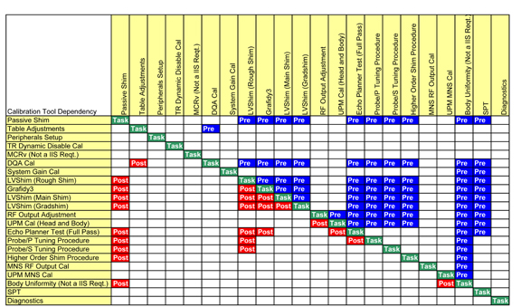
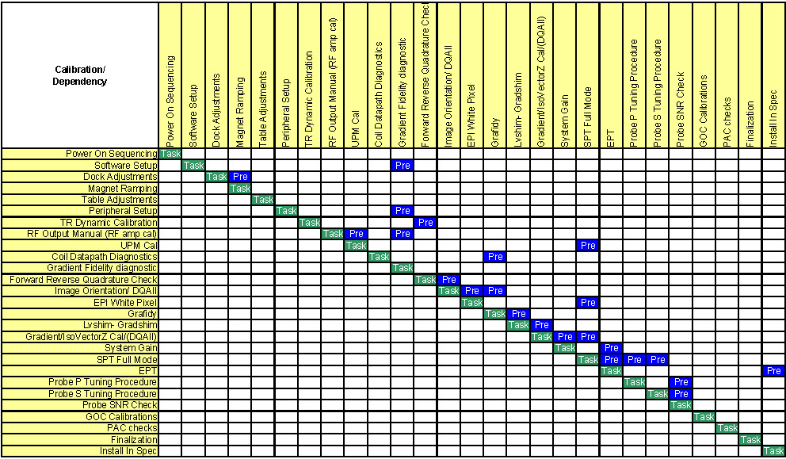
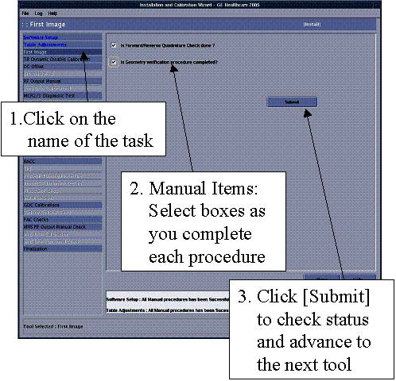

Illustration 3: Maintenance Mode Dependency Matrix

To understand the dependencies that the tool uses during Install mode, see the first illustration below. (Machine data refers to data stored on the system.) To understand the dependencies that the tool uses during Maintenance mode, see Illustration 3.
Illustration 2: Install Mode Dependency Matrix


Illustration 3: Maintenance Mode Dependency Matrix
How to read the matrices:
| Cell Color | Explanation |
|---|---|
| Green (labelled Task) | When ready to perform a procedure, select the green Task label for the procedure. Follow the columns up and down to see which tasks need to be performed before and after this task. |
| Blue (labelled Pre) | The blue Pre tasks are prerequisites for the task that will be performed. |
| Yellow (labelled Post) | The yellow Post tasks need to be performed after the procedure. |
| NOTE: | The same task calibrations are listed along the top and side. The ideal order of task calibration completion is from top to bottom. Example: If the UPM Calibration task needs to be performed, find UPM Cal in the left column of Illustration 2. Follow that row across to the Task cell (in green). The task, RF Output Manual (RF Amp Cal), should be performed before UPM Cal; this prerequisite task is labelled Pre (in blue). |
In Install mode, the ICW will not allow the user to perform a calibration the first time until all the necessary prerequisite tasks and calibrations are completed. Some calibration steps will have machine data. An example is LVShim data, which is stored in the /usr/g/service/data directory.
Other calibrations will not have machine data. For tests that have no machine data, verify the tasks were performed by clicking the box for each step, then clicking [Submit]. (See illustration below.)
Illustration 4: Advancing Through Manual Items During Installation
